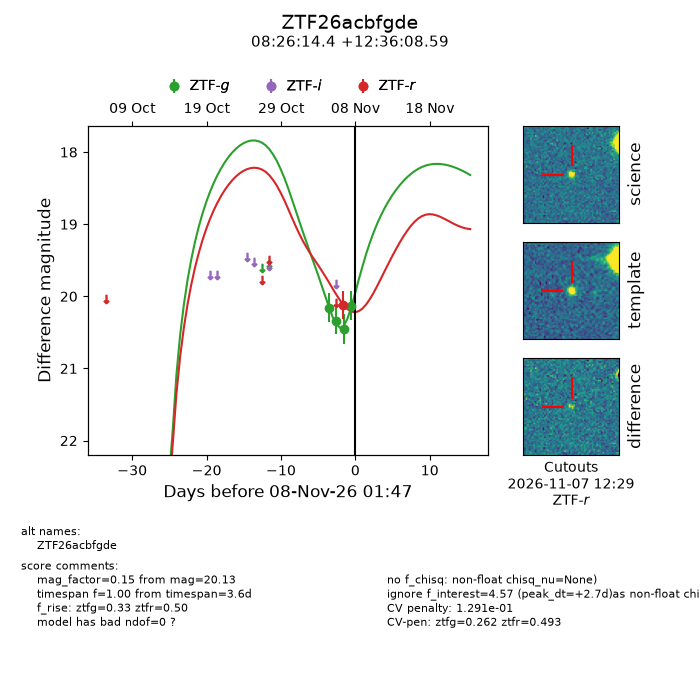
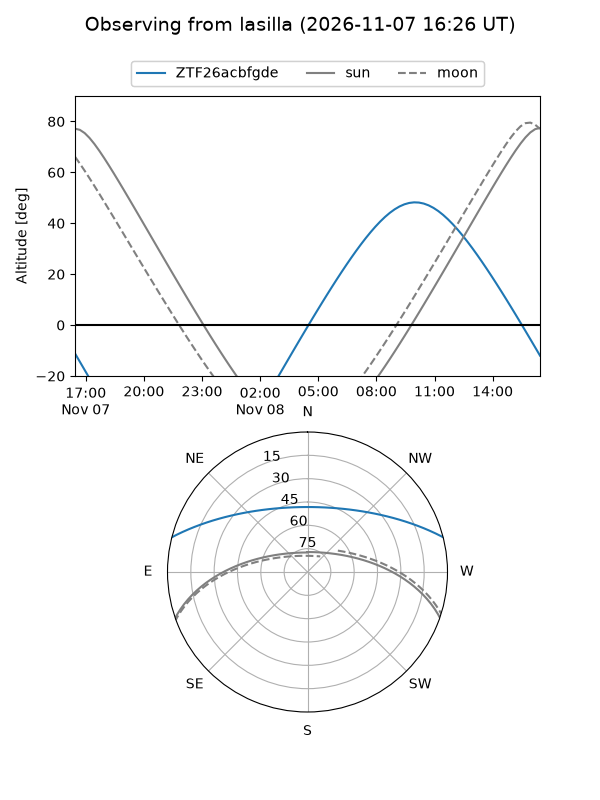
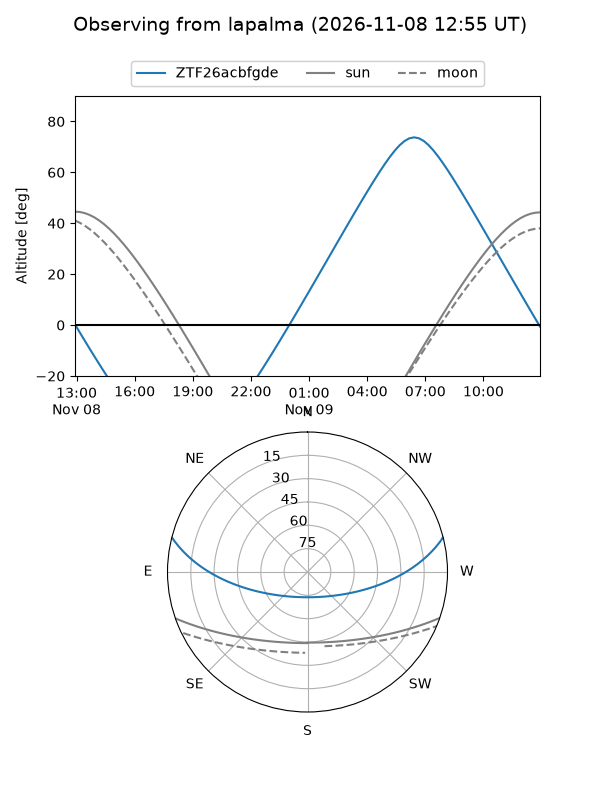
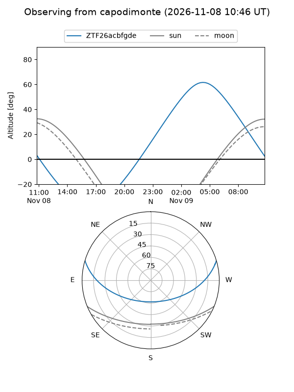
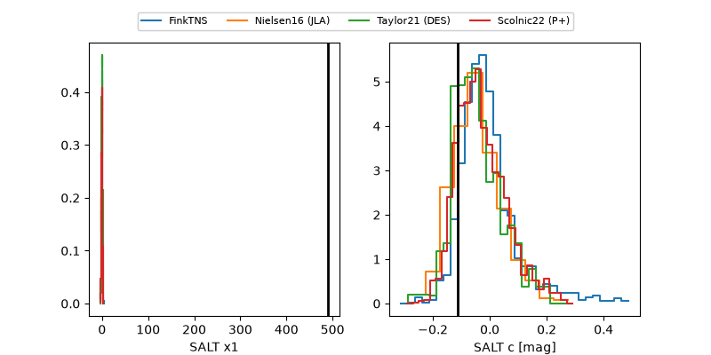

ZTF26acbfgde
Target ZTF26acbfgde at 2026-11-08 13:50
Aliases and brokers:
FINK-ZTF: ztf.fink-portal.org/ZTF26acbfgde
Lasair-ZTF: lasair-ztf.lsst.ac.uk/objects/ZTF26acbfgde
ALeRCE-ZTF: alerce.online/object/ZTF26acbfgde
Direct TNS query: direct search
alt names
ZTF26acbfgde (ztf,fink_ztf)
Coordinates:
equatorial (ra, dec) = 126.5598,+12.60239
equatorial (HMS+DMS) = 08:26:14.36,+12:36:08.59
galactic (l, b) = (211.9502,+26.65412)
Flags:
likely cv: !!
CV pen: 0.1290945139170026
peak dt: +3.2
Photometry:
last ztfg=20.13, ztfr=20.12
4 ztfg, 1 ztfr detections
Lightcurve

Visibility



Additional plots
